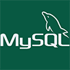

Olá, meu nome é Gustavo. Estou atualmente me formando em Sistemas para Internet na Fatec de Lins, e estou ansioso para mergulhar na área de programação, especialmente no desenvolvimento de Backend. A busca por aprofundar meu conhecimento e habilidades em desenvolvimento de sistemas e serviços é o que me motiva. Este é o início de uma jornada empolgante, onde espero criar projetos significativos e crescer como um desenvolvedor de software.
Conhecimentos
Html
Css
JavaScript
Php

Mysql
Arduino
Virtual M.
Git
GitHub
Serviços Prestados
Redes
Técnico especializado em configuração e manutenção de redes de computadores.
Conhecimento sólido em infraestrutura de rede e configuração de switches.
Profissional em configuração de roteadores para garantir a confiabilidade de redes.
Hardwares
Técnico especializado em manutenção de hardware de computadores.
Experiência em formatação e instalação de drivers em computadores.
Técnico em manutenção preventiva e reparo de impressoras.
Suporte
Fornecimento de suporte técnico eficaz para a resolução de problemas técnicos.
Experiência em auxiliar usuários com questões de sistemas.
Profissional especializado na solução de problemas de software para atender às necessidades dos usuários.
Experiências
Cursos & Certificados
Certificado em curso básico em Mysql Udemy-2022.
Instituto Americano De Lins,(Informática) Desde
2016-Dezembro de 2018.
Certificado em Iniciação Científica
da Fatec-Lins Desde 2022-Dezembro de 2023.
Informatiza
Técnico em manutenção de equipamentos de
informática Desde 2017-Atual.
Trabalho com estruturação e instalação de redes.
Trabalho com câmeras de segurança.
Fatec Lins
Cursando: Sistema para Internet(No período de manhã).
Projeto de Iniciação Ciêtifica com durabilidade de três semestres com arduino.
Aspirante a desenvolvedor.
Projetos
Atividade do primeiro semestre, voltada para a criação de mídias digitais,foi utilizado a ferramenta Adobe Photoshop, durante essa etapa, foi adquirido habilidades em design gráfico e manipulação de imagens.
Atividade do primeiro semestre, voltada para a criação de mídias digitais,foi utilizado a ferramenta Adobe Photoshop, durante essa etapa, foi adquirido habilidades em design gráfico e manipulação de imagens.
No segundo semestre, foi criado um site informativo sobre ONGs ou movimentos sociais, foi escolhido a Casa de Agricultura de Lins como tema do projeto.
No terceiro semestre, desenvolvemos um site para uma pizzaria, incorporando código JavaScript para a criação de um carrinho de compras que apresenta as pizzas escolhidas.
No quarto semestre, desenvolvemos uma agenda com JQuery que possibilita a adição, exclusão, edição e pesquisa de contatos, proporcionando uma gestão eficiente das informações.
No quarto semestre, criamos um cardápio online utilizando jQuery, proporcionana aos usuários realizarem pedidos. Além disso, implementamos abas de administrador para permitir alterações no cardápio.
No quinto semestre, desenvolvemos uma tela com os protótipos para o sistema de reserva de salas e definições das aulas, da Faculdade de Tecnologia de Lins.
No sexto semestre, desenvolvemos uma tela de login em Flutter com validações e verificações para garantir a inserção correta das credenciais do usuário.